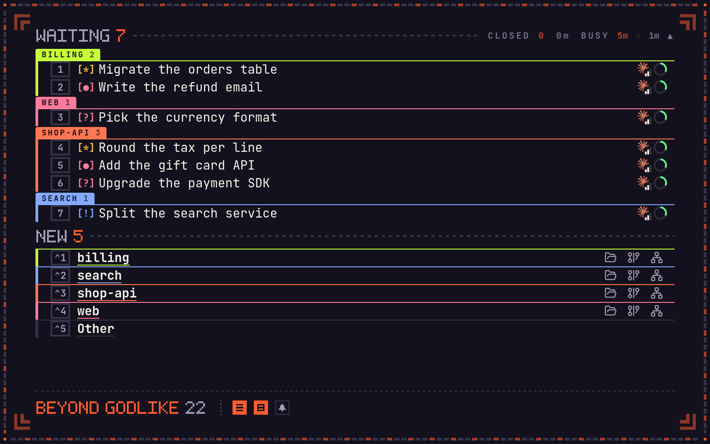
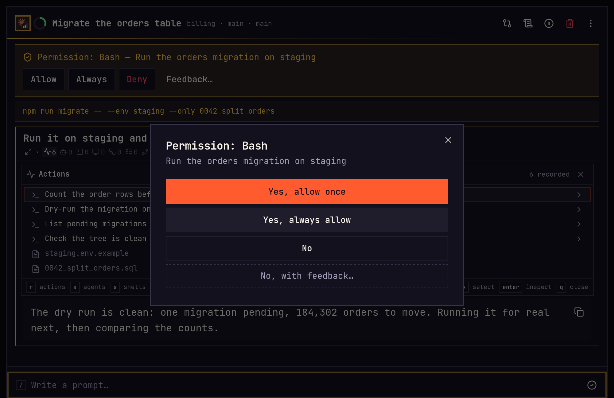

The rank
The list names how many spawns are at work, from to .
Spawn features
A spawn is one coding agent on one task in one repository, on a machine you own. These are the things you do with one, the most used first.
01Ultrafocus
One key clears the screen down to the spawns that need you, each with a number that opens it. The rank of how many are at work sits at the foot, and a sound plays when another one starts waiting.

02Answer
A spawn stops when it needs you, and its light says why. Allow a command once or always, deny it with a note on why, or pick an answer to its question.

03Proof
Screenshots, films and test reports arrive as cards in the feed. Open one, box the part you mean or draw on it, and write a note. The note goes back to the agent with the picture.

04Plan
Ask for a plan first, and the spawn writes one before it touches a file. Comment on any line and iterate to send it back, or approve it and the work starts.

05Watch
The feed shows each command, test run and file edit as it happens, and every spawn's light shows on the list. Type while it works, and the word reaches the turn already running.

06Start
Say what needs doing and pick the repository. Choose Claude Code or Codex, the model, the effort and the account it runs on, from the keyboard. It works in your checkout or in a worktree of its own, and part way through you can hand the work to the other agent.

07Look
Open the page it built inside imba, at a phone's size and a computer's side by side. The agent can drive a browser of its own while you watch, and you can take the wheel at any moment.

08Review
When the light turns pink, the work is done. The Edits box lists every file it changed, the change story walks through each scene, and the blast map shows what the change reaches. Done commits it and pushes it.

Running many
The list names how many spawns are at work, from to .
A builder and a checker, round after round, until the work is proven.
New loop
A run graph of helper spawns, approved before any of them start.
New orchestration
Fetch, pull, push and commit the repository from the keyboard.
Commit graph
A terminal in the spawn's own folder, pinned beside the chat.
Shells
Mark a spawn, and it stays on the Out of Office screen while you are away.
Watch while away
Without you
Private alpha
imba is not released. It changes most days, and parts of it still break. A few people run it now on real work and say what went wrong.
hristo.hristov@theoremus.com